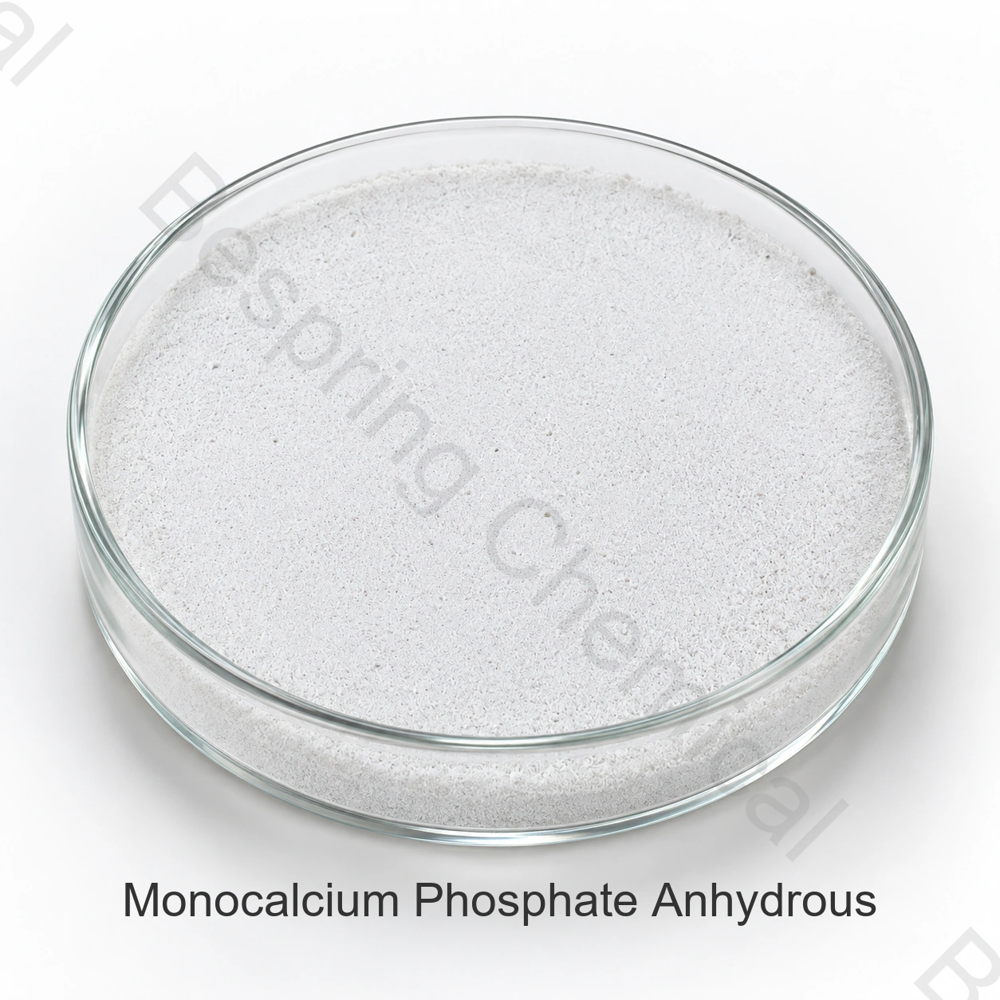

Identité anhydre
Préciser CAS 7758-23-8, norme prévue, besoins en réaction, quantité et destination.
Ingrédient alimentaire · Phosphate calcique acide · MCP
Le phosphate monocalcique anhydre est la forme sans eau de cristallisation du dihydrogénophosphate de calcium. Ce phosphate de calcium acide est évalué dans des systèmes alimentaires appropriés pour la levée, l’effet tampon, le traitement des pâtes et d’autres fonctions de formulation.

Image du produit · confirmez le grade et le conditionnement à la commande
Partagez la qualité exacte, l'application, la quantité, l'emballage, la destination et les documents requis.
GradeQualité alimentaire, sous réserve de la qualification de la source exacte
SpécificationDocument actuel disponible auprès des ventes
EmballageConfirmé dans l'offre spécifique à la source
Preuves par lotsCOA actuel disponible pour les lots fournis
Aperçu du produit
Le phosphate monocalcique anhydre est la forme sans eau de cristallisation du dihydrogénophosphate de calcium. Ce phosphate de calcium acide est évalué dans des systèmes alimentaires appropriés pour la levée, l’effet tampon, le traitement des pâtes et d’autres fonctions de formulation.
L’aptitude commerciale dépend de la source exacte, de la fonction prévue, du procédé alimentaire complet et des règles du marché de destination. Convenez de la spécification propre au grade pour votre commande et utilisez le COA du lot pour la réception.
Liste de contrôle pour les achats
Comparez le grade proposé, les exigences de l’application et les conditions commerciales avant de demander un échantillon ou de passer commande.
Préciser CAS 7758-23-8, norme prévue, besoins en réaction, quantité et destination.
Demandez la spécification signée actuelle et confirmez que la forme proposée n’est pas le monohydrate.
Fournir le système de bicarbonate, le procédé, le profil cible de libération de gaz et les essais de produits finis.
Vérifier les catégories d'aliments autorisées, les niveaux d'utilisation et l'étiquetage sur le marché de destination.
Évaluation préliminaire des applications
Sélectionnez les applications autorisées sur le marché de destination et évaluez les performances dans les aliments finis.
Évaluer comme composant acide des poudres à lever et systèmes de boulangerie après des essais de laboratoire et en usine.
Évaluez la compatibilité de la formule, le mélange, la fermentation et la texture finale dans le système réel à base de farine.
Évaluer l'acidité et le comportement tampon en fonction du pH cible et des conditions du processus.
Qualifiez l’écoulement, la distribution granulométrique, le risque de ségrégation et la stabilité au stockage.
Sélection technique
Distinguez le CAS 7758-23-8 du monohydrate CAS 10031-30-8 dans la description d’achat.
Définir le comportement de neutralisation et de libération de gaz requis au moyen d'essais d'application.
Adaptez la granulométrie à l’uniformité du mélange, à la maîtrise des poussières et à la dispersion dans le procédé.
Avant utilisation, vérifiez l’autorisation de l’INS 341(i) pour la catégorie alimentaire et le marché de destination.
Documents techniques
Bespring Chemical ne publie pas les spécifications du produit pour cet ingrédient en ligne. Contactez l'équipe de vente pour connaître les spécifications actuelles spécifiques à la source ou TDS et confirmez que sa révision, ses méthodes d'essai et ses critères d'acceptation correspondent à vos exigences d'achat.
Demandez la spécification signée actuelle ou la fiche technique (TDS), la FDS (SDS), les méthodes analytiques, un COA représentatif et le COA de lot.
Vérifiez les certificats applicables de sécurité alimentaire, qualité, origine, allergènes, conformité casher ou halal et de site pour le grade et la source exacts.
Revoir la monographie FAO/OMS-JECFA du dihydrogénophosphate de calcium, puis appliquer les règles actuelles du marché de destination aux aliments finis.
Note de conformité: Les références internationales d’identité n’autorisent pas à elles seules toutes les applications. L’acheteur doit confirmer la catégorie alimentaire, le niveau d’emploi, l’étiquetage et les autres exigences dans chaque marché de destination.
Stockage et manutention
Questions de l'acheteur
Le phosphate monocalcique anhydre est la forme sans eau de cristallisation du dihydrogénophosphate de calcium. Ce phosphate de calcium acide est évalué dans des systèmes alimentaires appropriés pour la levée, l’effet tampon, le traitement des pâtes et d’autres fonctions de formulation. La fourniture est régie par la spécification signée actuelle de la source retenue.
CAS 7758-23-8; INS 341(i); Ca(H2PO4)2. Lorsque le nom couvre une famille ou un mélange, confirmer le membre exact et la composition avant l'approbation.
Pour le grade proposé, demandez la spécification actuelle ou la fiche technique (TDS), les méthodes d’essai pertinentes et les COA disponibles. Confirmez les exigences de qualité convenues avant commande.
Demandez la spécification actuelle ou la fiche technique (TDS), la FDS (SDS), un COA représentatif, le COA de lot et les certificats pertinents de sécurité alimentaire, d’origine, d’allergènes, casher, halal ou autres pour la source exacte.
Indiquez le grade ou type exact, l’application, les exigences critiques de performance, la quantité, le conditionnement, le marché de destination, les documents requis, l’Incoterm et la date de livraison souhaitée.
Approvisionnement connexe
Parcourez le portefeuille complet et les dossiers de produits techniques disponibles.
Discutez des spécifications du produit, des documents, de l'échantillon et des exigences commerciales.
Examiner l'approvisionnement et le soutien à l'exportation pour l'approvisionnement international en ingrédients.
Approvisionnement fondé sur les spécifications
Indiquez le grade ou le type exact, l’application, les exigences critiques de performance, la quantité, le conditionnement, la destination et la liste des documents pour obtenir une proposition pertinente.
Indiquez votre grade et le marché de destination afin que nous puissions confirmer les documents disponibles pour votre commande.
Une référence externe n'est pas un certificat de lot ou une spécification de produit Bespring.